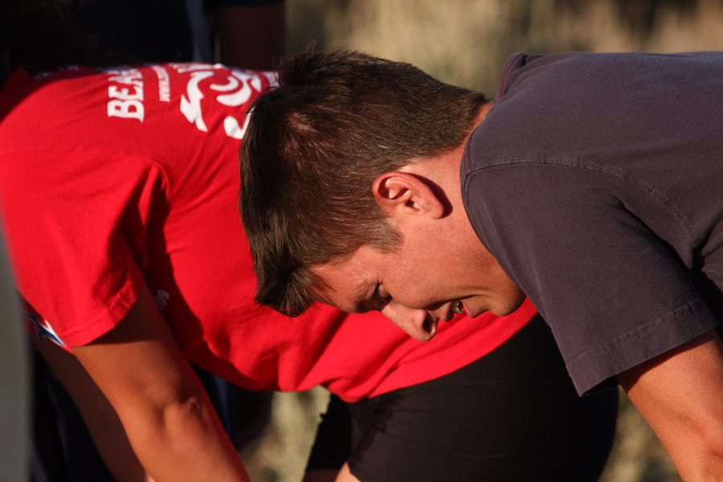
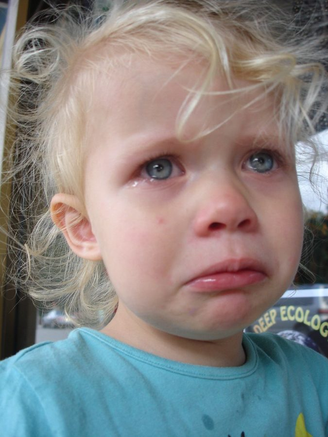
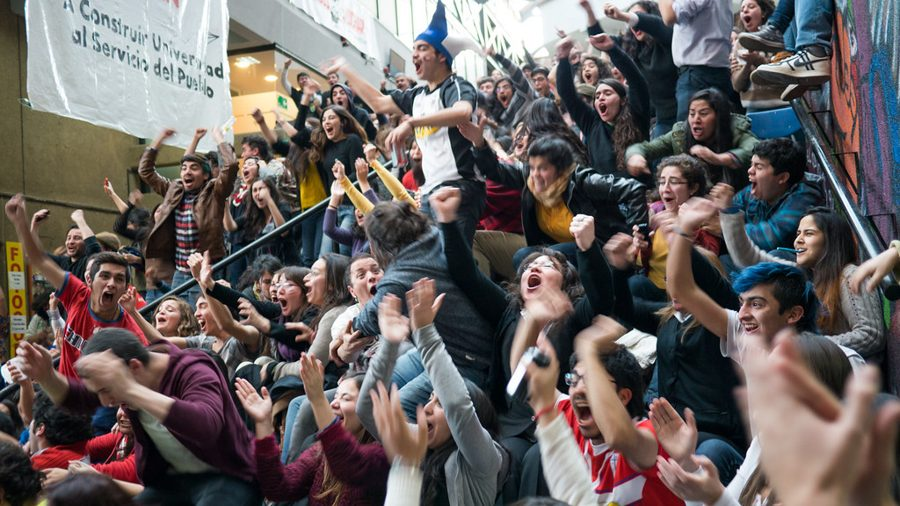

Part 1 of 2: adjectives to describe how people feel, and how to remember new words by personalising them.
Vocabulary: Adjectives of feelingLearn to learn: Personalising
Part 1
Vocabulary
Adjectives of feeling
1. Choose the adjective that describes the person in each photo. Listen (3.01), check and repeat.
1Example
2

3
4
5

6

2. Complete the sentences with adjectives from Exercise 1.
1. Sam's afraid of dogs so he doesn't want to walk through the park.
2. Bruno spoke to me today. I felt so . My face went red.
3. I'm about my exams. What should I do?
4. It's Ana's birthday today! She's very .
5. I'm . This documentary isn't very interesting.
Personalising
You can write a sentence that is true for you to help you remember new words. I often feel tired in the evening.
3. Write a personal sentence for six of the adjectives in Exercise 1.
1.
2.
3.
4.
5.
6.
4. Read your sentences to your teacher, but don't say the adjectives. Can your teacher guess the adjectives?
You
I feel … when I forget someone's name.
Teacher
Embarrassed?
5. Use it! Choose an adjective in Exercise 1 and tell your teacher about a time when you felt like that. Your teacher will ask questions to find out more.
You
I felt angry when my brother took my bike because he didn't ask me.
Teacher
When did that happen?
Guess the correct answer.
If you have didaskaleinophobia, you are afraid of …
Find out another unusual thing people are afraid of. Then write a question for your teacher to answer.